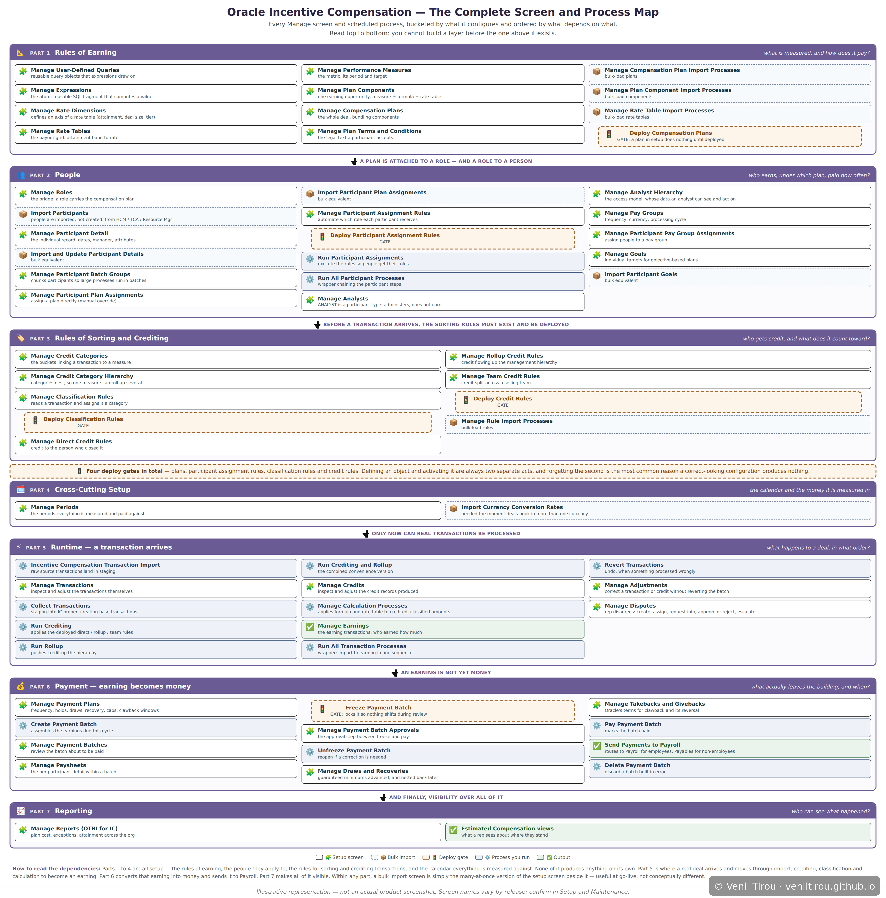
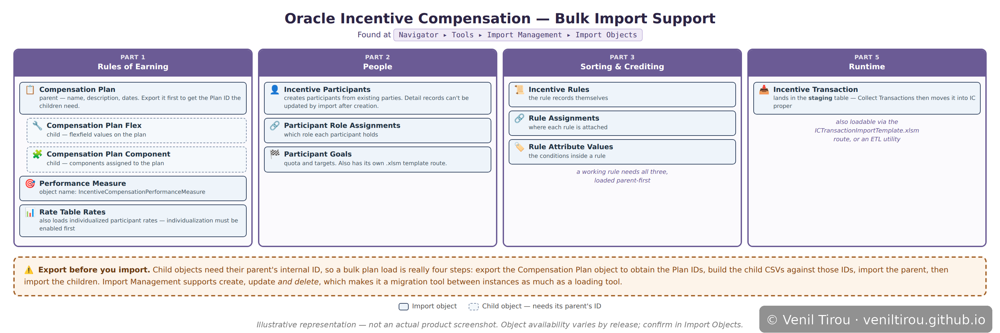

Reference
Incentive Compensation — Setup and Data Reference
This page is a reference rather than a story. Chapter 3 follows a single deal from Closed Won through to a paycheck; these two maps lay out the whole surface area behind that journey — every setup screen and scheduled process in dependency order, and which of that data can be bulk loaded rather than entered by hand. They're meant to be consulted while you work, not read start to finish.
How to use these: The first map answers "what do I
have to build, and in what order?" — useful when standing up a new
implementation or trying to place an unfamiliar screen. The second
answers "can I load this data rather than key it in?" — useful
at go-live, during a migration between instances, or any time the volume
makes manual entry impractical. Both are organised into the same seven
layers, so a screen and its import object sit under the same heading.
A note on accuracy: Screen names, process names and
import object availability all vary by Oracle release and by what your
organisation is licensed for. Treat these maps as a guide to the
structure and the dependencies, and confirm the specifics in your own
environment: Setup and Maintenance → Setup: Sales → Incentives
for tasks, Tools → Scheduled Processes for the process catalog,
and Tools → Import Management → Import Objects for the
importable objects.
The Setup and Process Map
Every Screen and Process, in Dependency Order

📱 On mobile? Pinch to zoom to read the details clearly.
What this shows: Sixty-seven screens and processes,
bucketed by what they configure and ordered by what depends on what.
Read top to bottom: you cannot build a layer before the one above it
exists. Parts 1 to 4 are all setup — the rules of earning, the people
those rules apply to, the rules for sorting and crediting transactions,
and the calendar everything is measured against. None of it produces
anything on its own. Part 5 is where a real deal arrives and moves
through import, crediting, classification and calculation to become an
earning. Part 6 converts that earning into money and sends it to
Payroll. Part 7 makes all of it visible. The colour coding separates
setup screens from bulk imports, from the processes you run, from the
outputs they produce.
The detail worth carrying away: there are four deploy gates on this map — compensation plans, participant assignment rules, classification rules and credit rules. Defining an object and activating it are always two separate acts in this system, and forgetting the second is the most common reason a configuration that looks entirely correct produces nothing at all.
The detail worth carrying away: there are four deploy gates on this map — compensation plans, participant assignment rules, classification rules and credit rules. Defining an object and activating it are always two separate acts in this system, and forgetting the second is the most common reason a configuration that looks entirely correct produces nothing at all.
Bulk Import Support
Which Data You Can Load Rather Than Key In

📱 On mobile? Pinch to zoom to read the details clearly.
What this shows: The Incentive Compensation objects
available through Import Management, placed against the same layers as
the map above. Plans come in as a parent with two children —
Compensation Plan, then Plan Flex and Plan Component — and rules split
three ways across the rule itself, where it's assigned, and the
attribute values inside it. Transactions land in a staging
table first; Collect Transactions is what moves them into Incentive
Compensation proper.
Two practical points. First, child objects need their parent's internal ID, so a bulk plan load is really four steps: export the parent to obtain the IDs, build the child files against those IDs, import the parent, then import the children. Second, notice which layers are absent — periods and currency rates, payment batches, paysheets and reporting have no import objects at all. Import Management reaches the setup and inbound-data end of the module and stops there, because the rest is what the business runs rather than what you load. That boundary is a reasonable way to guess, for any unfamiliar screen, whether a bulk-load path is likely to exist behind it.
Two practical points. First, child objects need their parent's internal ID, so a bulk plan load is really four steps: export the parent to obtain the IDs, build the child files against those IDs, import the parent, then import the children. Second, notice which layers are absent — periods and currency rates, payment batches, paysheets and reporting have no import objects at all. Import Management reaches the setup and inbound-data end of the module and stops there, because the rest is what the business runs rather than what you load. That boundary is a reasonable way to guess, for any unfamiliar screen, whether a bulk-load path is likely to exist behind it.
Where the Story Is
If you want the narrative version:
Chapter 3 — Oracle Incentive Compensation follows James
through a single $78,500 deal, from the moment he marks it Closed Won to
the payment landing in his June paycheck, and explains each concept as
the story reaches it. These maps are the surface area; that chapter is
the path through it. For where Incentive Compensation sits among the
wider Sales Performance Management capabilities, see the Foundation
chapter on Sales Performance Management.